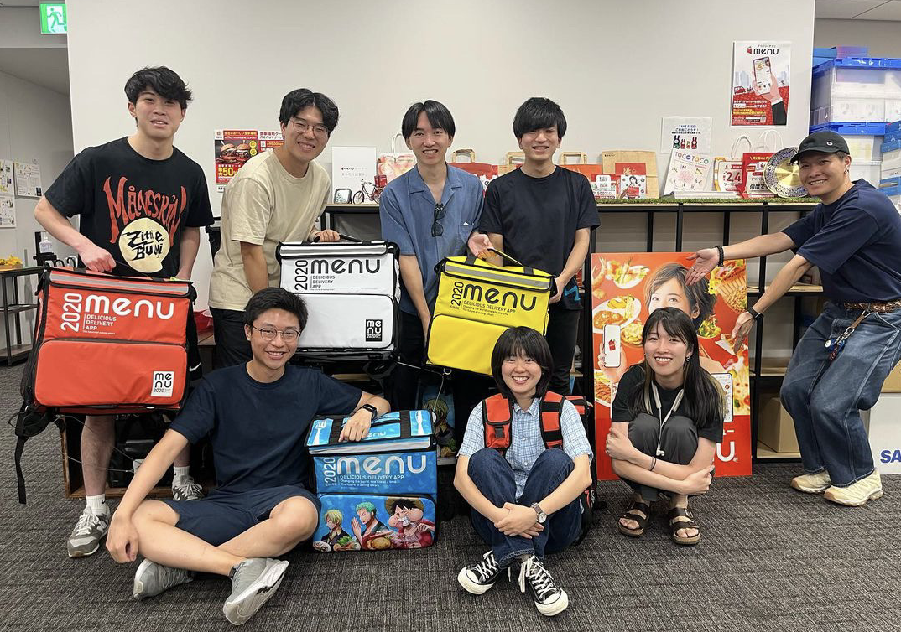

2023 Summer
Last summer, I worked as a Data Science intern at menu, a Japanese food delivery company. I developed regression models for delivery driver availability prediction, and performed KPI analysis for the business development team. I learned how to work with a multi-disciplinary team, and found joy in it.
Hobbies
When I have free time, I like to read, ride my bike, brew coffee, listen to podcasts, and take photographs. I mainly read Japanese classical literature, by Dazai Osamu, Natsume Soseki, and the like. Reading helps me take a break from my fast paced life and "slow down time". Photography allows me to look at the world from fresh and unique perspectives.